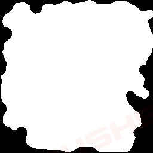
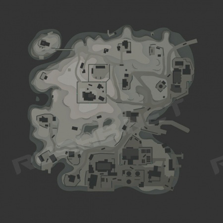
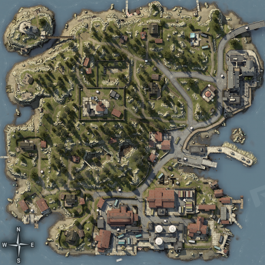

CSGO RushB中文网
CSGO RushB中文网
CSGO头号特训（危险地带/Danger Zone）是小规模快节奏Battle royale游戏模式，玩家将扮演特训选手将借助虚拟现实设备传送至神秘小镇，通过搜寻装备、物资、使用兑换券升级装备，以淘汰其他选手，以此选拔出最优秀的户外特训战士。
目前，CSGO官方只发布了一张头号特训地图《神秘小镇》，而且没有公布开发文档，但已有玩家研究出了如何制作头号特训地图，以下是详细内容：
注意：本文来自VALVE开发社区，原文并不完善，仅供参考，并且需要CSGO地图制作相关知识，
头号特训地图基本要求
trigger_survival_playarea
地图大小至少13440×13440单位，但建议为16384×16384单位，因为这是官方地图的大小。
当在地图顶部使用画笔部署黑鹰直升机后，退出画笔按E可放下降落绳。
黑鹰直升机应部署在可游玩区域，使用触发纹理。
point_dz_weaponspawn
武器刷新点应散布在地图周围，并且之间需要有一定间隔，否则可能无法刷新。
注意：为了保证玩家在选择降落点后不会崩溃，武器刷新点需要保证一定数值，数值推断大概在90-230之间，而神秘小镇这张地图有530个武器刷新点。
基本实体
info_gascanister_launchpoint
指定爆炸油桶发射位置
info_map_region
用于设置地图区域的名称
point_dz_dronegun
设置无人机枪刷新点
point_dz_parachute
设置降落伞刷新点
func_hostage_rescue
人质救援区域触发区域
func_tablet_blocker
禁止地底玩家使用平板电脑触发区域
game_survival_logic
游戏期间发生某事件需要的触发实体
trigger_survival_playarea
设定生存区域触发边界
dz_door
设定需要金钱解锁的铁门
point_dz_weaponspawn
武器刷新点
由point_dz_weaponspawn生成的实体
func_survival_c4_target
保险柜
prop_weapon_upgrade_chute
降落伞
prop_weapon_upgrade_tablet_zoneintel
平板电脑升级芯片：显示下一区域
prop_weapon_upgrade_tablet_droneintel
平板电脑升级芯片：显示无人机及其踪迹
prop_weapon_upgrade_tablet_highres
平板电脑升级芯片：提高玩家位置精度
prop_weapon_upgrade_contractkill
淘汰目标h合同
prop_weapon_upgrade_armor_helmet
盔甲和头盔
prop_money_crate
金钱袋
prop_metal_crate
微冲武器箱
prop_loot_crate
各种箱子，包括工具、爆破道具、手枪等
prop_ammo_box_generic
弹药箱
item_cash
金钱
dronegun
无人机炮塔
hostage_entity
人质
限制玩家降落区域
通过放置在文件路径csgo/maps/，名称格式为dz_mapname_spawnmask的PNG图片文件实现，黑色填充区域代表禁止降落位置。

平板电脑地图显示图像
通过放置在文件路径csgo/materials/models/weapons/v_models/tablet/，名称格式为tablet_radar_dz_mapname的VTF纹理文件实现。

选择降落点界面地图图像
通过放置在文件路径csgo/materials/panorama/images/survival/spawnselect/，名称格式为map_dz_mapname的PNG图像文件实现。

VALVE开发社区原文地址